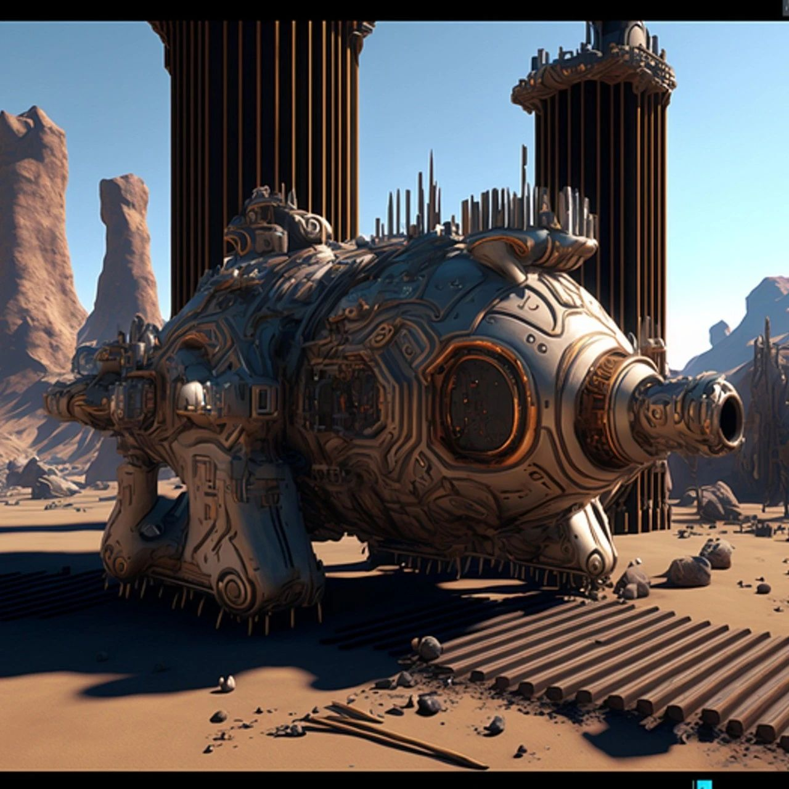
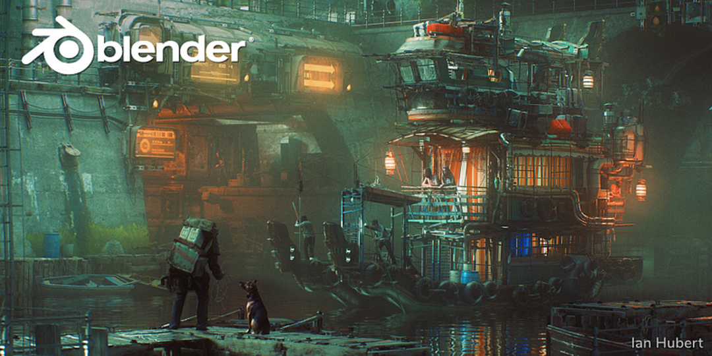
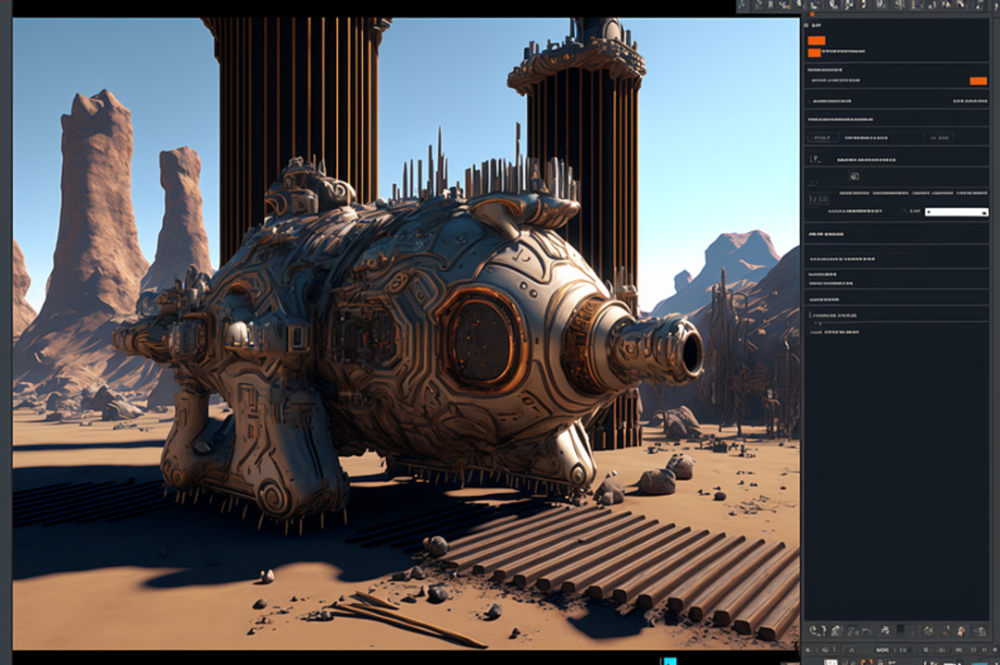

💡 Blender 是一款革命性的开源软件，用于 3D 动画、建模和渲染，是专业人士和业余爱好者的绝佳工具。然而，像所有 3D 工具一样，Blender 有着非常陡峭的学习曲线。

● ● ●Blender 是一款革命性的开源软件，用于 3D 动画、建模和渲染，是专业人士和业余爱好者的绝佳工具。然而，像所有 3D 工具一样，Blender 有着非常陡峭的学习曲线。想要精通 Blender 需要多年的时间，这也引出了一个问题：在 2023 年是否值得投入大量时间去掌握 Blender?使用 Blender 有什么困难吗？THE BELTDER
Blender 是一款高度可定制的软件，但其用户界面相对复杂。这种非传统的用户界面可能会让习惯于其他 3D 建模软件的用户感到困惑。此外，为了达到项目的预期成果，还需要学习各种各样的 3D 动画技巧。最后，精通 Blender 需要深入了解数字雕刻（digital sculpting）、纹理映射（texture mapping）、纹理烘焙（texture baking）、骨骼绑定（rigging）和皮肤绑定（skinning）等难度较大但对于掌握 Blender 至关重要的技能。
blender.org在浏览器内还是在浏览器外？THE BLENDERBlender 的限制之一是设备的图形处理能力。为了支持更复杂的工作流程，你的设备必须升级到更高端的英伟达™（NVIDIA）的 显卡（GPU），而这可能相当昂贵。得益于近期浏览器内 3D 渲染技术的进步，如 WebGL 2，使得直接在浏览器中创建 3D 数字资产成为可能。像 Blender 和 Unreal Engine 这样的大型应用程序所面临的限制可以通过产品的浏览器版本来缓解。未来平台将主要由基于 WebGL 等框架支持的浏览器内实现，或者从计算中心进行流式处理。AI 正在改变游戏规则THE BLENDER正如我们在 2022 年末所看到的，AI 模型变得越来越高效和有效。这些模型能够遵循人类指令，并可以用最少的用户输入来创建 3D 模型和动画。这意味着，在未来，任何对 AI 和 3D 模型有基本了解的人都将能够用较少的时间来构建复杂的 3D 动画和模型。游戏开发和原型设计的早期阶段将主要涉及开发人员和设计师「指导」AI 制作他们的想法的草图。这将大大减少目前开发人员被迫做出的时间投入，并为更多人创造 3D 艺术作品打开了大门。Midjourney未来
THE BLENDER
Blender 是一款功能强大的开源软件，可用于创建惊人的 3D 模型，但需要大量时间和投入。随着 AI 的发展，学习使用 Blender 和使用 AI 工具的时间投入之间的差距将会加大。5 年后，我们将使用什么工具来创建和动画制作 3D 模型呢？END作者：Aman Kishore翻译：Misty 校对：EffectChen排版：小空 审核：Ines